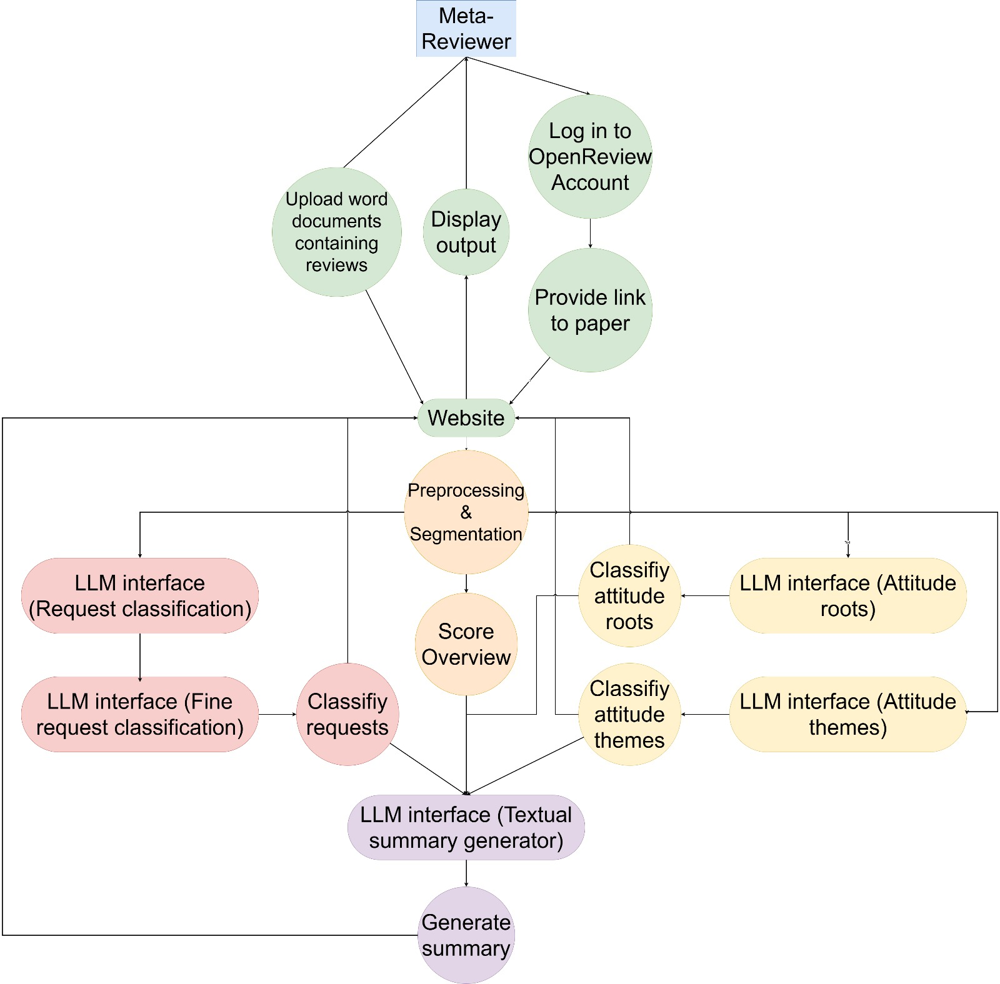

Architecture, Data Flow and Design Notes
Data Flow

The diagramm shows the dataflow starting at the user input and ending in displaying the output.
1 Frontend
The Frontend is the user interface of the system where individuals log in, provide a URL to OpenReview, and optionally download and then upload the filled out templates. The Frontend handles interactions, collects the user’s input (including files and URLs), and displays the resulting classification output once the Backend has processed everything.
2 Backend
Once the Frontend submits data (whether uploaded files or URLs), the Backend starts analyzing the provided data. It first performs formatting and segmentation, breaking the reviews into sentences. From there, the system routes the segments to various prediction modules. The “Request Prediction” module handles general categorization of the Request, while an “Attitude/Theme Prediction” module determines attitude and corresponding themes and descriptions. After processing these steps, the Backend compiles the outputs—now in the form of classified sentences or structured results—and sends them back to the Frontend to display to the user.
3 Model Training
As part of our framework, there is the model training. Initially we trained the models used in the Backend to perform the neccesary classification tasks. This training process results in Model Artifacts, such as updated model parameters, which the Backend uses during its prediction steps. If necessary, the existing model and code files can be used to update and improve existing models with new data or better models.
Request Classifier
For the Request Classifier we used two fine tuned models to firstly label what sentences are requests and then have a fine grained classification for the type of request. The first is a binary classifier which achieved an F1 Score of 91%, we tried oversampling, but the results were worse. For the fine requests we have a multi class prediction for which we also tried different models and approaches. The best results were with the addition of thresholding resulting in a F1 score of 62%.
Attitude and Theme Classifier
For the Attitude Roots which represent the underlying believes we made a multi class prediction and tried different models and approaches (normal training, oversampling and hybrid with normal training and oversampling). We achieved an F1 Score of 62% with the BERT model which was pretrained on domain knowledge.
Summary Generation
To create the summary—which aggregates all results sorted by “Overview”, “Attitude Roots” and “Request Information”—we tried different models and evaluated their performance using the BERT score. More specifically, we pre-structured the summary using Python and then generated predictions only for the collections of comments corresponding to a particular attitude root or request, as determined by our other models.
Data Collection and Labeling Process: We manually collected data from nine OpenReview threads to ensure a balanced distribution of overall ratings. Specifically, the selection includes three examples from each rating category: "low" with overall score < 4, "average" with overall score >=4 but < 7 and "high" with overall score >= 7. Instead of treating each individual comment as a separate data point, we clustered sentences so that each cluster represents the set of comments associated with a single paper and corresponds to a specific "attitude root" or request as identified by our preliminary models (e.g., all comments complaining about a typo). This clustering resulted in 174 aggregated data points (see model_training/nlp/summary/data/real_world_data_unlabeled.jsonl). Next, each data point was labeled using OpenAI's so far most capable model ChatGPT o1. We then proofread these labels to ensure high quality (see model_training/nlp/summary/data/real_world_data_labeled.jsonl).
Prediction: We tried sequence to sequence approaches with BART-large and T5 using an 80%-10%-10% train-validation-test split. The best results were obtained using Llama2 with a 10-shot prompt, achieving an F1-BERT score of 69% on the test data.
4 Communication Flow
Frontend → Backend
The Frontend issues secure API calls to the Backend when users log in, provide URLs, or upload filled templates. The Backend processes these incoming requests—formatting and segmenting the data—and routes them to the appropriate prediction modules. The Backend functions as a API gateway.
Backend → Frontend
Once the predictions are complete, the Backend responds via API calls back to the Frontend, delivering classified sentences, sentiment results, or other structured outputs. The Frontend then displays these results to the user in a clear, readable format.
Model Training and Backend
The models trained in the Backend are stored in the designated containers with are activated when the Backend is called.